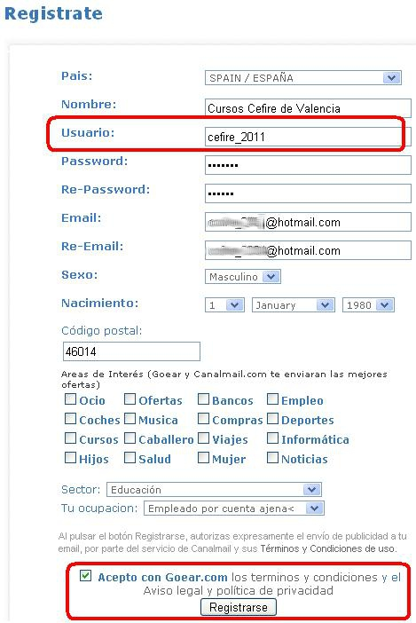
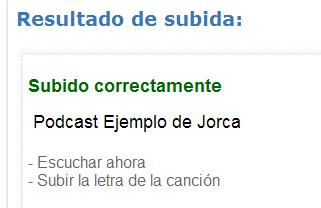

1.1. Proyecto: Nuestros Podcast
| PASOS A REALIZAR LA PRIMERA VEZ PARA REGISTRARNOS EN UN LUGAR DE ALOJAMIENTO DE PODCAST |
|
Si no disponemos de una cuenta en goear procedemos a crearla. Entramos en www.goear.com y procedemos a registrarnos.
Rellena el siguiente formulario. Donde usuario es tu nick o login de entrada y requieres de una cuenta de e-mail para confirmar, posteriormente, tu cuenta.

|
2- Entramos en nuestro servidor o lugar de alojamiento de nuestros podcast. en este caso en goear. Introduce tu nombre de usuario (1) y la contraseña (2) e Iniciar Sesión.
En la parte inferior del navegador se nos mostrará un mensaje con nuestro nombre de usuario.
3- Subimos nuestro fichero de sonido. Haz clic en el fichero Subir tu música.
Debemos detallar una serie de aspectos que van identificar nuestro podcast.
Indicamos el nombre de nuestro podcast(1), el artista (2) que en este caso somos nosotros, el nombre del álbum (3) que podría estar en blanco, el G´nereo musical al que pertenece (4), una pequeña descripción (5) que leerá la gente que acceda a nuestro podcast. Utilizando el explorador de archivos (6) localizaremos el fichero de audio (podcast) en nuestro ordenador. Aceptaremos (7) las condiciones y lo subimos (8).
Si el proceso no tiene ningún error en la transmisión nos muestra el siguiente mensaje:

Si seleccionamos escuchar ahora, el servidor nos muestra una página dividida en dos partes, en la zona izquierda (1) un reproductor con el que podríamos escuchar nuestro podcast. En la zona (2) derecha nos muestra las URL o links para acceder a nuestro podcast o incrustrarlo en un blog.
Jo.R.C.A. 2004 - 2011

Edición de Audio y Video con Software Libre by José Ramón Cerdeira Alonso is licensed under a Creative Commons Reconocimiento-No comercial-Compartir bajo la misma licencia 3.0 España License